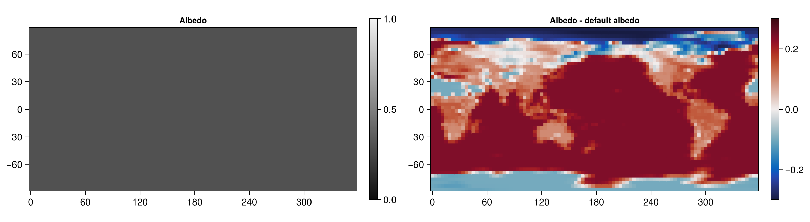
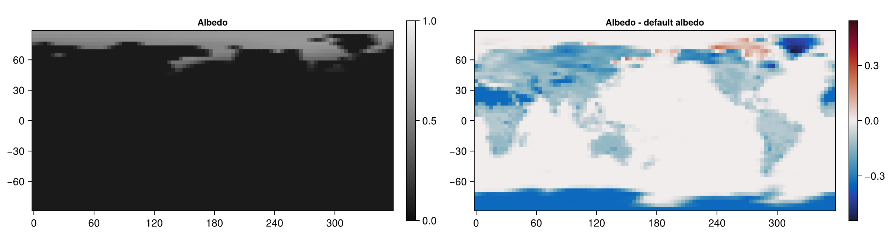

List of submissions
It follows the code, evaluation and a map of the albedo (and its difference to the default albedo) on the last time step of all Chiaroscuro submissions to /submissions sorted by rank.
Monty Python: A wise old sage said point three
path: /submissions/constant.jl
rank: 1. of 2 submissions
name = "Monty Python"
description = "A wise old sage said point three"
# the same albedo everywhere, ignoring all inputs
albedo(inputs) = 0.3
Evaluation:
(score = 7.097751387611749, land_score = 9.027458084867579, ocean_score = 6.162171740267833, tropical_score = 5.034108321494334, polar_score = 10.61588410378138)
Brian: Bright sea ice, dark ocean
path: /submissions/sea_ice.jl
rank: 2. of 2 submissions
name = "Brian"
description = "Bright sea ice, dark ocean"
function albedo(inputs)
(; sea_ice_concentration) = inputs
# linear blend between dark open ocean and bright sea ice
a = 0.06 * (1 - sea_ice_concentration) + 0.6 * sea_ice_concentration
return clamp(a, 0, 1)
end
Evaluation:
(score = 7.834767491612739, land_score = 10.560903405243343, ocean_score = 6.433514495929456, tropical_score = 5.587571131627315, polar_score = 11.63204730354054)